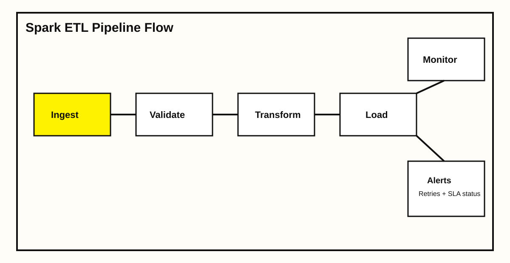

Engineered a Spark ETL platform for high-volume transaction data where existing jobs were slow, brittle, and expensive under peak load. The redesign focused on deterministic processing, easier recovery, and stronger observability.
Project scope
Processed ~180 million daily records from event and operational sources into Delta tables used by revenue, retention, and operations dashboards. Added end-to-end lineage and run-level quality signals for each stage.
Architecture Snapshot

Impact Metrics
-38%
Job Runtime
-27%
Compute Spend
99.3%
Pipeline Success Rate
Implementation details
Implemented incremental watermarking, optimized partition strategy for skewed keys, and made all writes idempotent. Added threshold-based alerting and SLA dashboards so incidents are detected early and resolved with clear failure context.